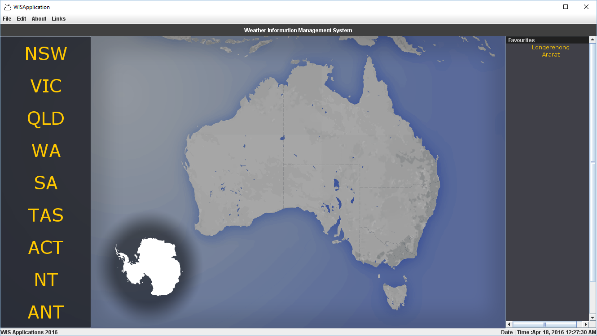
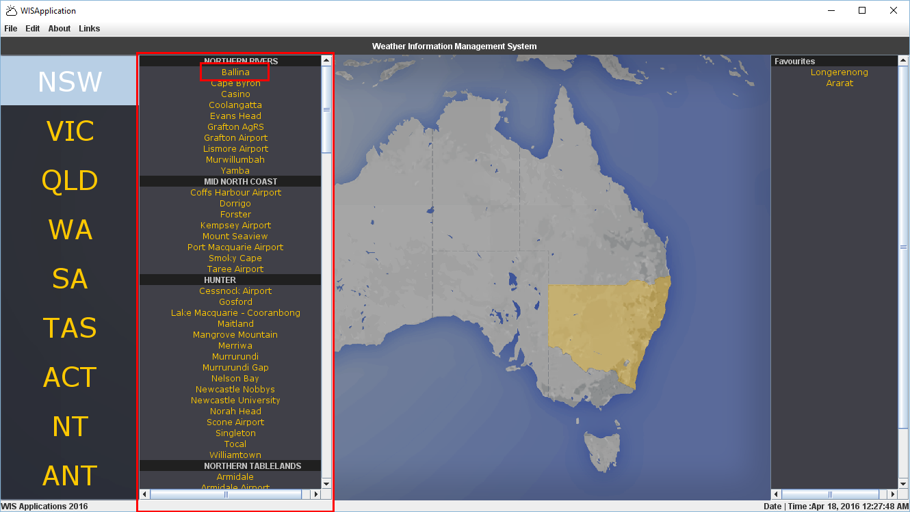
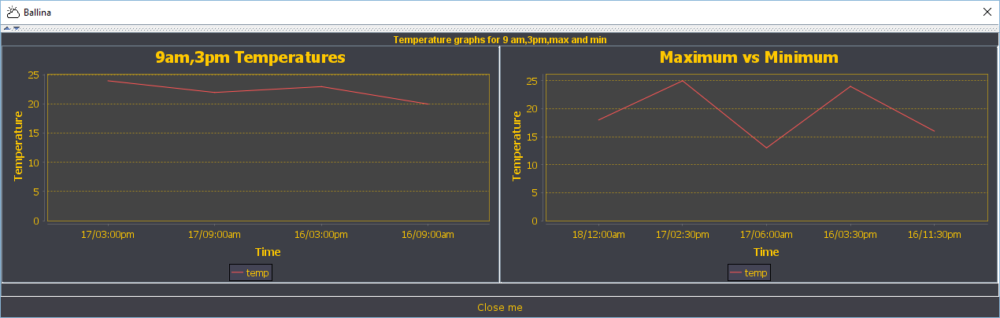

Weather Information Management System [WIMS] User Documentation
-
Introduction
Weather Information Management System [WIMS] [VERSION NUMBER] is the latest version. WIMS is a self contained .jar executable
program that fetches real time weather data from the Bureau of Meteorolgy website and displays it in a user friendly format.
The program is written in Java [VERSION] and requires your operating system to have Java [VERSION] installed.
-
Installation
-
Installing Java
-
Installing Weather Information Management System
-
Launching the program
-
Quick Overview
- Section 1 in the image above is the list of states weather data is provided for. Clicking any of these will open up a selection of weather stations to view.
- Section 2 in the image above is the map display. This is simply a graphical display to assist in visualising selecting a state from the list.
- Section 3 in the image above is the list of favourite weather stations stored. Any weather stations added to favourites will appear here.
-
Checking the weather
-
Choosing a state
-
Finding your area
-
Finding your weather station
-
Displaying weather data
-
Favourite weather stations
-
Adding a favourite weather station
-
Removing a favourite weather station
-
Uninstall
To install Java head to the Java website and download the latest version. Follow it's installation instructions.
WIMS comes as a self contained .jar executable and does not require installation in order to launch.
To launch WIMS simply double click the .jar file, or right click and select "OPEN".

Upon launch, WIMS should look similar to the above image. This screen contains all you need to begin navigating the program.
When the program is initially opened, a list of states is displayed on the left-hand side. (See box 1 for list of states)
Simply hover or click on the state in order to reveal a panel containing that state's areas and weather stations. (See box 2 for example of a state)
Once you've chosen a state, simply scroll through the list of areas until you find your desired area. [ ! Perhaps I can implement alphabetical sorting?]
To find your weather station, simply scroll through the list of areas weather stations.
To display weather data for your desired weather station simply click on the weather station's name.

The weather data for that weather station will appear in a table format similar to the one below.
To display the data in a more visual form, simply click the down arrow to display a graph of the data.
 To add a weather station to your favourites list, simply open that weather station to view it's data
and left click the button "+ Add Favourite"
To remove a weather station from your favourites list, simply open that weather station to view it's data
and left click the button "- Remove Favourite"
The program does not need a proper uninstallation to be removed, as it does not need to be installed. Instead, simply delete the .jar file and any assosicated files.